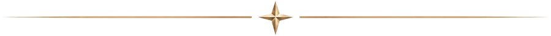

تحليل الفجوات والجاهزيةGap and readiness analysis
تقييم الوضع الراهن وتحديد الأولويات ووضع خطة لإغلاق الفجوات.We assess the current situation, set priorities and build a plan to close the gaps.

Quality, Accreditation, Excellence & Consultingللاستشارات والجودة والاعتماد والتميز
لا ننظر إلى الجودة باعتبارها مجرد متطلبات للحصول على شهادة أو اعتماد، بل منظومة متكاملة تدعم المنشآت لتكون أكثر كفاءة وفاعلية واستدامة.To us, quality is more than the requirements for a certificate or accreditation. It is an integrated system that helps facilities become more efficient, effective and sustainable.
تعرّف عليناMore about usمن تحليل الفجوات إلى متابعة فعالية التنفيذ.From gap analysis to implementation follow-up.
تقييم الوضع الراهن وتحديد الأولويات ووضع خطة لإغلاق الفجوات.We assess the current situation, set priorities and build a plan to close the gaps.
تصميم الوثائق والنماذج التشغيلية بما يسهم في تطوير الخدمات وتشغيلها بكفاءة.We design the operational documents and forms that help develop your services and run them efficiently.
مراجعة الأدلة والتحقق من التطبيق ومتابعة الإجراءات التصحيحية.We review the evidence, verify implementation and follow up on corrective actions.
متابعة فعالية التنفيذ لضمان استدامة التحسين.We follow up on how effectively the work is implemented, so the improvement lasts.
إدارة المخاطر وتحسين الأداء من خلال بناء سجل للمخاطر ووضع خطط لمعالجتها.We manage risk and improve performance by building a risk register and plans to treat each risk.
من خلال التدريب والتوجيه التطبيقي وتحويل المعرفة إلى ممارسة عملية.Through training and applied coaching that turn knowledge into everyday practice.
تأهيل المجمعات الطبية والأسنان، ومنشآت اليوم الواحد، والمختبرات والمستشفيات لمعايير الاعتماد، واعتمادات مراكز التميز.We prepare medical and dental complexes, one-day facilities, laboratories and hospitals for accreditation standards and centre-of-excellence accreditations.
تأهيل المنشآت التعليمية وتطوير أنظمتها ورفع كفاءتها وفق معايير الجودة والاعتماد.We prepare educational institutions, develop their systems and raise their efficiency to quality and accreditation standards.
تطوير أنظمة إدارة الجودة والبيئة والسلامة والصحة المهنية وفق معايير ISO، مع ضبط العمليات والتدقيق الداخلي.We develop quality, environmental, and occupational health and safety management systems to ISO standards, with process control and internal audit.
تطوير ممارسة التشغيل والفرز والتعبئة والتتبع وسلامة الغذاء، وتحديد الأنظمة والنطاق الفني وفق نشاط المنشأة واحتياجاتها.We develop practice in operations, sorting, packing, traceability and food safety, and define the systems and technical scope that fit each facility's activity and needs.
أمثلة توضّح كيف نعمل مع كل نوع من المنشآت، خطوة بخطوة.Examples of how we work with each type of facility, step by step.
خبرة استشارية من خلال مساهمتنا مع العديد من المنشآت الصحية للحصول على اعتمادات جودة وتميز.Consulting experience built by helping many healthcare facilities obtain quality and excellence accreditations.
من نحنAbout us
في تأهيل المنشآت للحصول على الاعتمادات وشهادات الجودة وأنظمة الإدارة.Preparing facilities to obtain accreditations, quality certificates and management systems.
شركة استشارية سعودية متخصصة في تأهيل المنشآت للحصول على الاعتمادات وشهادات الجودة وأنظمة الإدارة.Laura Vantage is a Saudi consultancy specialised in preparing facilities to obtain accreditations, quality certificates and management systems.
نحن لا ننظر إلى الجودة باعتبارها مجرد متطلبات للحصول على شهادة أو اعتماد، بل باعتبارها منظومة متكاملة تدعم المنشآت لتكون أكثر كفاءة وفاعلية واستدامة.To us, quality is more than the requirements for a certificate or accreditation. We treat it as an integrated system that helps facilities become more efficient, effective and sustainable.
دورنا التأهيل والتمكين، ولسنا جهة قرار أو منح اعتماد أو شهادات.Our role is to prepare and enable. We do not make accreditation decisions or grant accreditations or certificates.
كلمة الرئيس التنفيذيA word from our CEO
في لورا فانتج، نؤمن بأن الجودة ليست متطلبًا يُستوفى مرة واحدة للحصول على شهادة، بل ثقافة تُبنى وممارسة تستمر. نعمل جنبًا إلى جنب مع المنشآت الصحية والتعليمية والصناعية والزراعية لتأهيلها للاعتمادات المحلية والدولية، وبناء أنظمة جودة عملية وقابلة للقياس. والتزامنا أن نكون شريكًا يمكّن فرق العمل، ويحوّل المعرفة إلى ممارسة، ويصنع تميزًا يستمر.At Laura Vantage, we believe quality is not a requirement you meet once to earn a certificate. It is a culture you build and a practice you keep. We work alongside healthcare, education, industrial and agricultural facilities to prepare them for local and international accreditation and to build quality systems that are practical and measurable. Our commitment is to be a partner that empowers teams, turns knowledge into practice, and builds excellence that lasts.
تتمثل قيمتنا في الجمع بين ثلاثة أمور، لتحقيق نتائج قابلة للقياس وتحسين مستمر.Our value comes from three things working together, for measurable results and continuous improvement.
الجمع بين المتطلبات المحلية والمعايير الدولية.We bring local requirements and international standards together.
من خلال مساهمتنا مع العديد من المنشآت الصحية للحصول على اعتمادات جودة وتميز.Built by helping many healthcare facilities obtain quality and excellence accreditations.
لتحقيق نتائج قابلة للقياس وتحسين مستمر.For measurable results and continuous improvement.
أن تكون الشركة من الجهات الاستشارية الرائدة في تأهيل المنشآت للحصول على الاعتمادات المحلية والدولية، وبناء أنظمة جودة مستدامة وفاعلة.To be one of the leading consultancies in preparing facilities to obtain local and international accreditations, and in building sustainable, effective quality systems.
تمكين المنشآت الصحية والصناعية والزراعية والغذائية من تحقيق الامتثال والتميز من خلال حلول استشارية عملية، وكفاءات متخصصة، وأنظمة قابلة للقياس والاستدامة.To enable healthcare, industrial, agricultural and food facilities to achieve compliance and excellence through practical consulting solutions, specialised expertise, and systems that are measurable and sustainable.
قيمناOur values
الرؤية والرسالة والقيمVision, mission and values
ما نسعى إليه، وما نعمل من أجله، والقيم التي نعمل بها.Where we are heading, what we work for, and the values we work by.
أن تكون الشركة من الجهات الاستشارية الرائدة في تأهيل المنشآت للحصول على الاعتمادات المحلية والدولية، وبناء أنظمة جودة مستدامة وفاعلة.To be one of the leading consultancies in preparing facilities to obtain local and international accreditations, and in building sustainable, effective quality systems.
تمكين المنشآت الصحية والصناعية والزراعية والغذائية من تحقيق الامتثال والتميز من خلال حلول استشارية عملية، وكفاءات متخصصة، وأنظمة قابلة للقياس والاستدامة.To enable healthcare, industrial, agricultural and food facilities to achieve compliance and excellence through practical consulting solutions, specialised expertise, and systems that are measurable and sustainable.
خدماتناServices
ست خدمات تغطي رحلة المنشأة من تحليل الفجوات حتى استدامة التحسين.Six services that cover a facility's journey from gap analysis to lasting improvement.
تقييم الوضع الراهن وتحديد الأولويات ووضع خطة لإغلاق الفجوات.We assess the current situation, set priorities and build a plan to close the gaps.
مثال:Example: مختبر يستعد لمعايير الاعتماد: نحدد ما ينقصه مقارنة بالمعيار، ونرتّب الأولويات في خطة واضحة لإغلاق الفجوات.A laboratory preparing for accreditation standards: we identify what is missing against the standard and rank the priorities in a clear plan to close the gaps.
تصميم الوثائق والنماذج التشغيلية بما يسهم في تطوير الخدمات وتشغيلها بكفاءة.We design the operational documents and forms that help develop your services and run them efficiently.
مثال:Example: منشأة تعمل دون إجراءات مكتوبة: نكتب سياساتها وإجراءاتها، ونصمم نماذجها التشغيلية لتعمل بها فرقها يوميًا.A facility with no written procedures: we write its policies and procedures and design the operational forms its teams use every day.
مراجعة الأدلة والتحقق من التطبيق ومتابعة الإجراءات التصحيحية.We review the evidence, verify implementation and follow up on corrective actions.
مثال:Example: قبل موعد التقييم: نجري تقييمًا افتراضيًا وفق المعيار، ونراجع الأدلة، ونتابع تصحيح كل ملاحظة.Before the assessment date: we run a mock assessment against the standard, review the evidence and follow up on every finding until it is corrected.
متابعة فعالية التنفيذ لضمان استدامة التحسين.We follow up on how effectively the work is implemented, so the improvement lasts.
مثال:Example: بعد تطبيق الإجراءات الجديدة: نتابع هل تُطبَّق فعلًا في العمل، ونعالج ما يتراجع حتى يستمر التحسين.After new procedures go live: we check that they are really followed at work, and fix whatever slips so the improvement lasts.
إدارة المخاطر وتحسين الأداء من خلال بناء سجل للمخاطر ووضع خطط لمعالجتها.We manage risk and improve performance by building a risk register and plans to treat each risk.
مثال:Example: نبني مع المنشأة سجلًا يحدد مخاطرها، ونضع لكل خطر خطة معالجة واضحة.We build a register of the facility's risks with its team, and set a clear treatment plan for each one.
من خلال التدريب والتوجيه التطبيقي وتحويل المعرفة إلى ممارسة عملية.Through training and applied coaching that turn knowledge into everyday practice.
مثال:Example: ندرّب الفريق على متطلبات المعيار، ثم نرافقه في التطبيق حتى تصبح المعرفة ممارسة يومية.We train the team on the standard's requirements, then work alongside it until the knowledge becomes daily practice.
نقدّم خدماتنا في أربعة قطاعات.We deliver these services across four sectors.
قطاعاتناSectors
الصحي، والتعليمي، والصناعي والتجاري، والزراعي.Healthcare, education, industrial and commercial, and agriculture.
تأهيل المجمعات الطبية والأسنان، ومنشآت اليوم الواحد، والمختبرات والمستشفيات لمعايير الاعتماد، واعتمادات مراكز التميز.We prepare medical and dental complexes, one-day facilities, laboratories and hospitals for accreditation standards and centre-of-excellence accreditations.
المنشآتFacilities
تأهيل المنشآت التعليمية وتطوير أنظمتها ورفع كفاءتها وفق معايير الجودة والاعتماد.We prepare educational institutions, develop their systems and raise their efficiency to quality and accreditation standards.
نعمل علىWhat we work on
تطوير أنظمة إدارة الجودة والبيئة والسلامة والصحة المهنية وفق معايير ISO، مع ضبط العمليات والتدقيق الداخلي.We develop quality, environmental, and occupational health and safety management systems to ISO standards, with process control and internal audit.
نعمل علىWhat we work on
تطوير ممارسة التشغيل والفرز والتعبئة والتتبع وسلامة الغذاء، وتحديد الأنظمة والنطاق الفني وفق نشاط المنشأة واحتياجاتها.We develop practice in operations, sorting, packing, traceability and food safety, and define the systems and technical scope that fit each facility's activity and needs.
وفق نشاط المنشأة واحتياجاتهاSet by each facility's activity and needs
نعمل علىWhat we work on
منهجيتناOur approach
أربع مراحل، من فهم الاحتياج إلى المراجعة والتحسين.Four stages, from understanding the need to review and improvement.
نبدأ بدراسة نشاط المنشأة والبرنامج أو المعيار المنطبق عليها.We begin by studying the facility's activity and the programme or standard that applies to it.
تُصمَّم الأنظمة والوثائق والنماذج وتُطبَّق في العمل الفعلي.Systems, documents and forms are designed and applied in day-to-day work.
التدقيق الداخلي ومتابعة الإجراءات التصحيحية حتى يستمر التحسين.Internal audit and corrective-action follow-up keep improvement going.
تواصل معناContact
تواصل معنا عبر الهاتف أو واتساب أو البريد الإلكتروني.Reach us by phone, WhatsApp or email.
الرقم الوطني الموحدUnified national number
7055258938
دورنا التأهيل والتمكين، ولسنا جهة قرار أو منح اعتماد أو شهادات.Our role is to prepare and enable. We do not make accreditation decisions or grant accreditations or certificates.
منهجيتنا تبدأ دائمًا بفهم الاحتياج.Our approach always starts with understanding the need.
دراسة نشاط المنشأة والبرنامج أو المعيار المنطبق عليها.We study the facility's activity and the programme or standard that applies to it.
تقييم الوضع الراهن وتحديد الأولويات وخطة إغلاق الفجوات.We assess the current situation, set priorities and plan how to close the gaps.
تصميم الأنظمة والوثائق والنماذج وتطبيقها في العمل الفعلي.We design the systems, documents and forms and put them to work in day-to-day practice.
التدقيق الداخلي ومتابعة الإجراءات التصحيحية واستدامة التحسين.Internal audit, follow-up on corrective actions and sustained improvement.
للاستفسارات الأخرى: واتساب Anything else: WhatsApp +966505442626